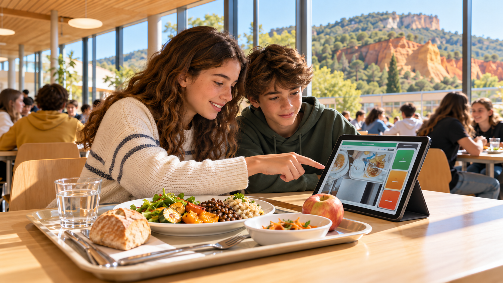

Collège Jean Giono · éco-délégués
Les missions des éco-délégués
Choisis ta mission, remplis ta fiche et inscris-toi avec tes camarades.
 Cantine · midi
Cantine · midi
Responsables tables de tri
Scan des plateaux, pain et fruits, biodéchets et emballages : choisis tes créneaux de 11h30 à 13h30.
Ouvrir le planning →
A.B.C. · Cantine Bas CarboneMon assiette, notre impact
Viande, poisson, végétarien : suis les repas et le gaspillage pour comprendre l’empreinte carbone de la cantine.
Ouvrir A.B.C. Cantine Bas Carbone → Enquête
Enquête
Enquêtes carbone
Électricité, eau, papier et équipements : rassemble les consommations de ton établissement.
Ouvrir Défi Carbone →Nos actions contribuent à ces objectifs